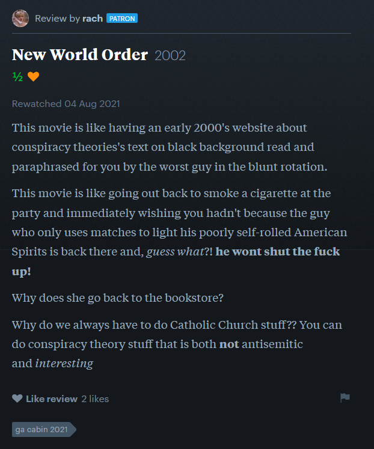
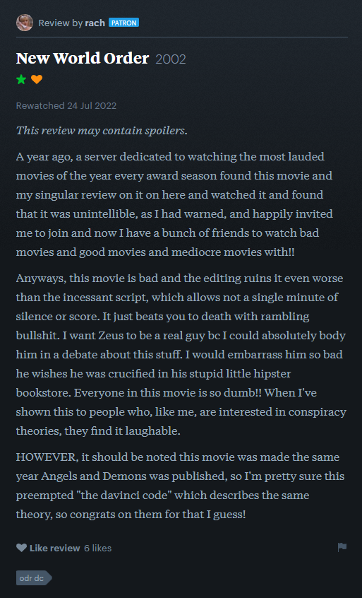
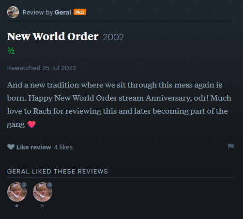

I've been watching a lot of bad films. When I'm in the mood I just go on Tubi and find something which sounds terrible, and I've been in the mood a lot recently. I got Banshees of Inisherin'd by a longtime dearly-held friend, after all that I talked about in blog076, unrelated people though. And someone who I think about a lot, who blames me for ruining their life, is doing critically poorly in life right now. The complete collection of these hits me like a truck every few hours I'm awake. They're nuanced situations and I feel incredible sorrow and guilt.
Some things I've seen in the past month include, in chronological order by oldest, Hell House LLC (1 1/2 stars), Death Toilet (0 stars, + liked), Maid Droid (1 1/2 stars), Sex and the Future (1/2 star), The Sex Robots Are Coming (0 stars), Moon Maidens (1 star), Attack of the 50 Foot Camgirl (1 1/2 stars, + liked), Slender (1/2 star), The Wife in the Window (1/2 star, I had to add its info to TMDB), Cam Girls (1 star), The Sand (1 star), Zombie Strippers! (2 stars, + liked), and New World Order (nee Noon Blue Apples) (1 1/2 stars).
New World Order (nee Noon Blue Apples) is the important one here. I watched it this morning, after watching Zombie Strippers! (director's cut), a film which is a lot more than it sounds on the tin, being filled with surface-level philosophical references and discussions, commentary on Bush and the war, and also rotting zombie super-strippers who shoot pool balls out of their vagina. And the effects are pretty good. I was so intrigued by the writing — as I explained before, I've seen a lot of complete booby garbage, which this is written very differently from — that I looked at what else the writer/director, Jay Lee, made. And 6 years before Zombie Strippers!, Jay Lee made Noon Blue Apples (now named New World Order), a conspiracy film shot pre-9/11 but released post-9/11.
It's an interesting film. It's really interesting. But, you know, I'm not actually writing this blog post to talk about Noon Blue Apples. I'm here to talk about three reviews I saw on Letterboxd about the film.



Letterboxd Reviews (click to expand)
Isn't that fucking beautiful, guys? Digital chance encounters, leaving mementos of the times people had. Reminds me of how I joined RFCK, completely randomly, and that's now defined the past 4 years of my life, and will continue to define it going forward, all that I became in there, the people I met, the connections I formed. Speaking of connections I've formed, Kip's been trying to find for me copies of MAID-DROID (2009), MAID-DROID 2: Maidroid vs. Hostroids, Molester's Train: Nasty Behavior, and some other pink films, all of which just do not exist online. When I watched Antiporno they joked that they watch these things as porn, but, y'know, I'm gay, it just doesn't have that appeal to me. I really don't know how to explain why I'm so interested in the field — it'd be so much easier if it was a sex thing! But it's not.
Been working on Island Off Outer Darkness. As always, as always. I'm writing this in the coffee shop that's near me and the guys at the checkout are talking about Thunderbolts* being Marvel's A24 film. "Made for the TikTok generation". When's Marvel's Zombie Strippers!?